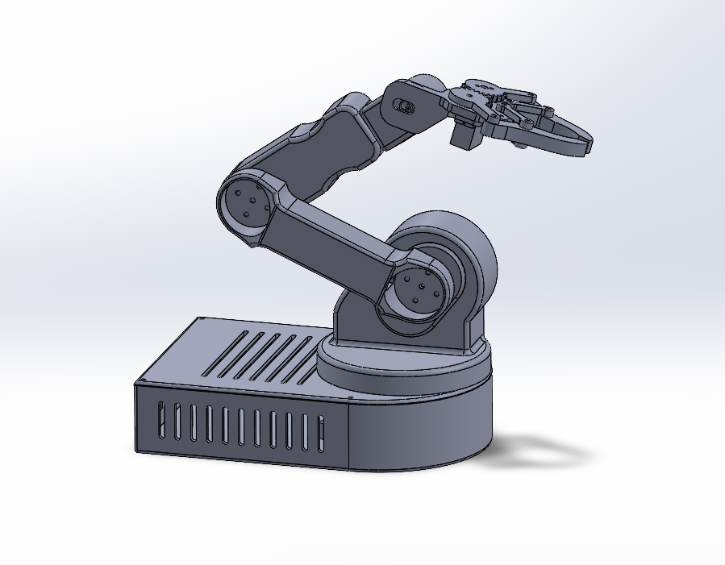

5-DOF Robotic Arm
Overview: Teleoperated 5-DOF arm with NEMA-17 base and servo joints. Goal was smooth real-time control from a master potentiometer rig and a clean, serviceable mechanical design.
Design & CAD
- Full assembly in SolidWorks; 3D printed ABS/PA6-GF parts with brass heat-set inserts.
- Gear train sizing for torque at the wrist and repeatability at the elbow.

Electronics & Control
- LM2596 buck regulation with hand-wired rails; Nano reads 4 pots on master controller.
- Mapped inputs to servo angles and stepper steps for base rotation.
Testing & Results
- Payload: 250 g at full extension; base stepper microstepping reduced jitter.
- Joint repeatability within ~2–3° measured across 20 cycles.
Challenges & Iterations
- Servo backlash caused oscillations at the wrist. Added stiffer horn and tuned deadband.
- Print warping on forearm bracket. Switched to 0.8 mm walls and higher bed temp.
Next Steps
- Custom PCB and inverse kinematics playback.